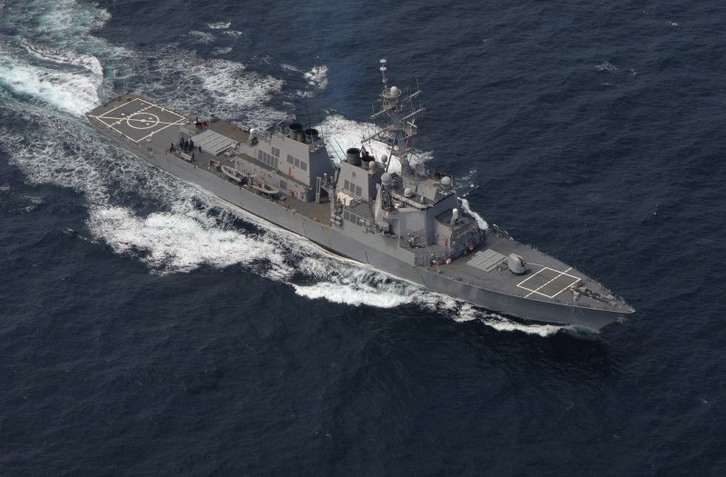
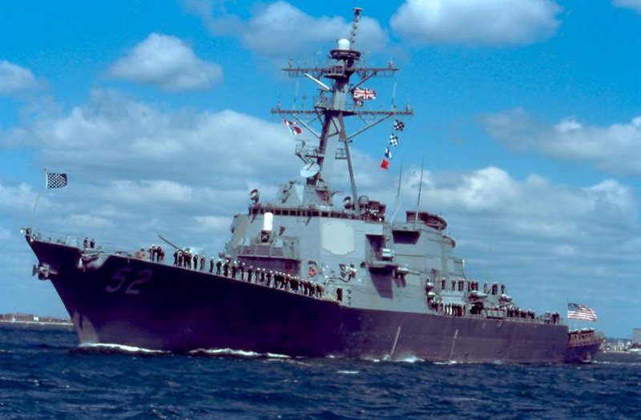
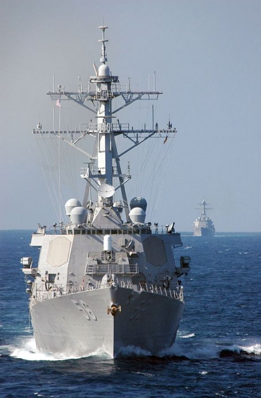
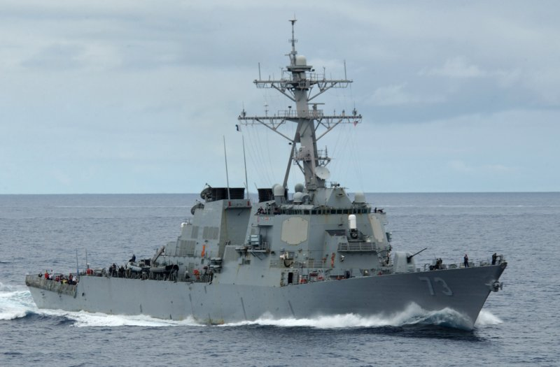
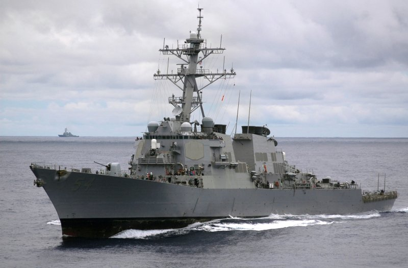
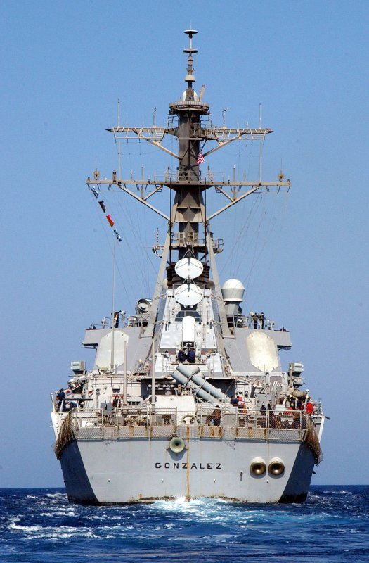

UNITED STATES ARLEIGH BURKE CLASS DDG LAST UPDATE:June 6, 2012     
|
| SPECIFICATIONS | PHOTOGRAPHS (Click on the pictures for an enlarged photo) |
 Designation: DDG Length: 505 ft (153m) Beam: 66 ft (20m) Draft: 31 ft (9m) Displace (Full Load): 8,300 tons Propulsion: 4 GE LM2500, Gas Turbines; two shafts Speed: 31 knots Range: 4,400 nautical miles (20 knots) Crew: 323 Helicopter(s): No hangar Sensors: - AN/SPY-1D Radar - AN/SQQ-89 Sonar Suite - AN/SQQ-28v LAMPS III Armament: - 21 cell Mk-41 VLS For SM-2, Tomahawk - 69 cell Mk-41 VLS Aft SM-2, Tomahawk - 8 Harpoon ASM - 2 X 20mm Phalanx CIWS - 1 X 127mm MK-45 DP Gun - 6 X Mk-46 LW Torpedoes Ships in class: 28 USS Arleigh Burke (DDG 51), Norfolk, VAThe United States navy embarked on an ambitious ship building program in the 1980s to entirely overhaul and modernize its guided missile destroyer fleet and standardize them on a single, powerful, multi-role hull design with the full AEGIS capability that had proven so successful with the Ticonderoga class guided missile cruisers. In addition, learning from the experiences of the USS Stark, the new class was built as an all steel design to improve battle damage capabilities. In addition, the new class introduced sloping and shaping deesign into its structure above the water line to reduce its radar cross section considerably. The result of all of this development was the Arleigh Burke class destroyers, the first of which, DDG 51, Arleigh Burke, was commissioned in 1985. These vessles represent very powerful surface combatants that can act in any escort role, in surface action groups, or independently to accomplish any anti-air, anti-surface, anti-shipping, or anti-asubmarine warfare role assigned to them. They are projected to have a 35 year service life. Although they do not have hangar facilities, they do have a full size landing pad and electronic capabilities to accomodate and support LAMPS III Seahawk helicopters as required. Twenty eight vessels, basically matching the initial basic design (with some improvments, particularly continuos upgrade to sensors which were planned for) were built. As older Spruance class destroyers and Perry class frigates which had hangar space for ASW helicopters reached the end of their service life and were decommissioned, it was clear that the Burke class needed to be redesigned to accomodate hangar space for the helicopters the class had heretofore only supported. The result of that redesign was a larger Burke class set of vessles, called Flight IIA, which really represents a new class and is covered on this site as such under the Burke Flight IIA class. |
      |


|
Jeff Head is a member of the US Naval Insitute who has many years experience in the power, defense, and computer industries. He currently works for the federal government helping maintain regional infrastructure. He is the author of a self-published military techno-thriller called, "Dragon's Fury," that projects a fictional third world war arising out of current events. Learn more about that series by clicking on the picture of the novel cover below:
 DRAGON'S FURY-World War against America and the West |
JEFFHEAD.COM Hit Counter

Jeff Head's Naval Sites Hit Counter